Using Brownian Bridge Movement Model from the adehabitatHR package to estimate seasonal ranges for each muskoxen. Summer and winter/calving are separated based on presence of snow and movement behaviours (see Movement Patterns). First let’s look at how long each season is for each muskoxen.
Some seasons are pretty short, due to the season overlapping the start or end of the monitoring period for that individuals. Let’s start by setting a cut-off for each season to be included in this analysis. Since muskoxen are moving around a lot in the summer, we’ll specify that we want relocations from the full season. There were two muskoxen that had their collars come off in August, so these were not considered when estimating summer home ranges. We captured full calving seasons in all but one instance (708 in 2008). Collars were typically deployed and removed during the winter, so there were several instances where we did not have relocations for the full winter season. For now we will use cutoff of three months (90 days). Winter typically lasts from end of October to our cutoff of April 1st. This ensures roughly 60% of the season is included for winter. Later we’ll compare different lengths of data to see the effect on home range estimates.
musk_collar_seas <- musk_season_length %>%### create groupings for muskoxen (7012 and 7013 overlap but the rest are separated)mutate(range_id =str_c(Id_Number,"_",year_min,"_",season),group =ifelse(Id_Number %in%c(7012,7013),"7012_13", str_c(Id_Number))) %>%group_by(Id_Number) %>%mutate(max_date =max(date),min_date =min(date)) %>%group_by(range_id) %>%mutate(flag =ifelse(max(date)==max_date|min(date)==min_date,1,0)) %>%ungroup() %>%filter(flag ==0| season =="Calving"&seas_length >=28| season =="Winter"&seas_length >=90| season =="Summer"&seas_length >=120) %>%ungroup() %>%mutate(range_id =factor(range_id)) %>%arrange(range_id)xy <- musk_collar_seas %>% sf::st_transform("+proj=utm +zone=9") %>% sf::st_coordinates()musk_ltraj <- adehabitatLT::as.ltraj(xy = xy, date = musk_collar_seas$datetime, id = musk_collar_seas$range_id)
Our first step towards creating seasonal home ranges is to determine GPS accuracy using stationary GPS data. We can use data from collar 707 as this collar was confirmed to have released early. We will calculate the standard deviation of the euclidean distances to estimate GPS accuracy. This will be used as the sig2 parameter in our models and can be used to help estimate the other model parameter, sig1, which is related to home range size.
We can then fit movement models for each muskox for each season and estimate utilization distributions. From these distributions we can compare size and overlap between seasons, years, and muskoxen.
Below we plot an example seasonal range as well as a comparison between 90% seasonal ranges and 50% core seasonal ranges for each season.
Let’s take a look at the contour plots for each individual to make sure they look okay:
Loading basemap 'topographic' from map service 'osm'...
Using geom_raster() with maxpixels = 659712.
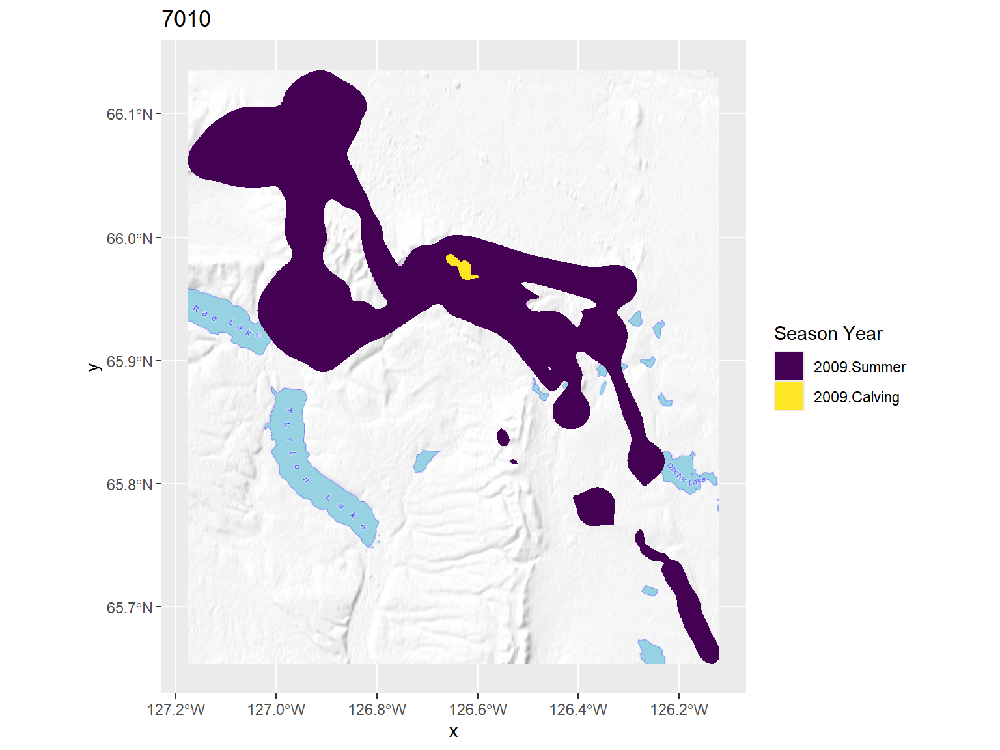
Loading basemap 'topographic' from map service 'osm'...
Using geom_raster() with maxpixels = 520010.
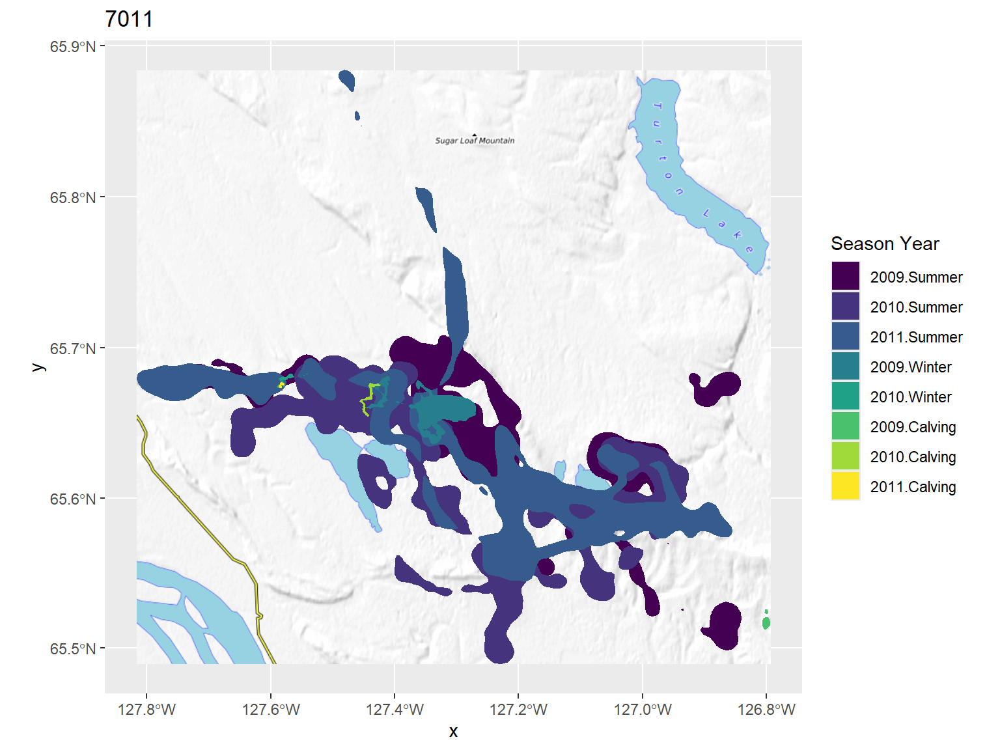
Loading basemap 'topographic' from map service 'osm'...
Using geom_raster() with maxpixels = 362340.
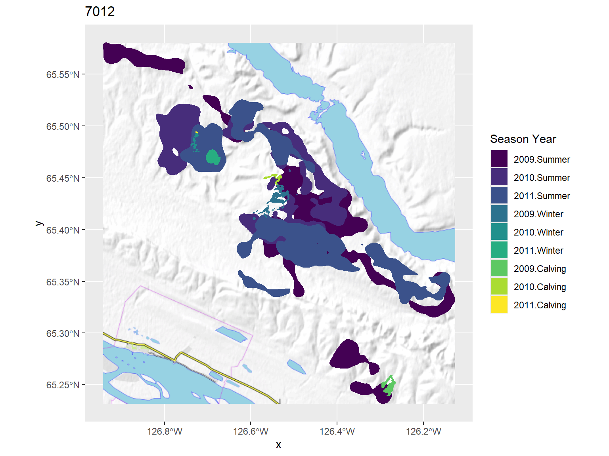
Loading basemap 'topographic' from map service 'osm'...
Using geom_raster() with maxpixels = 362340.
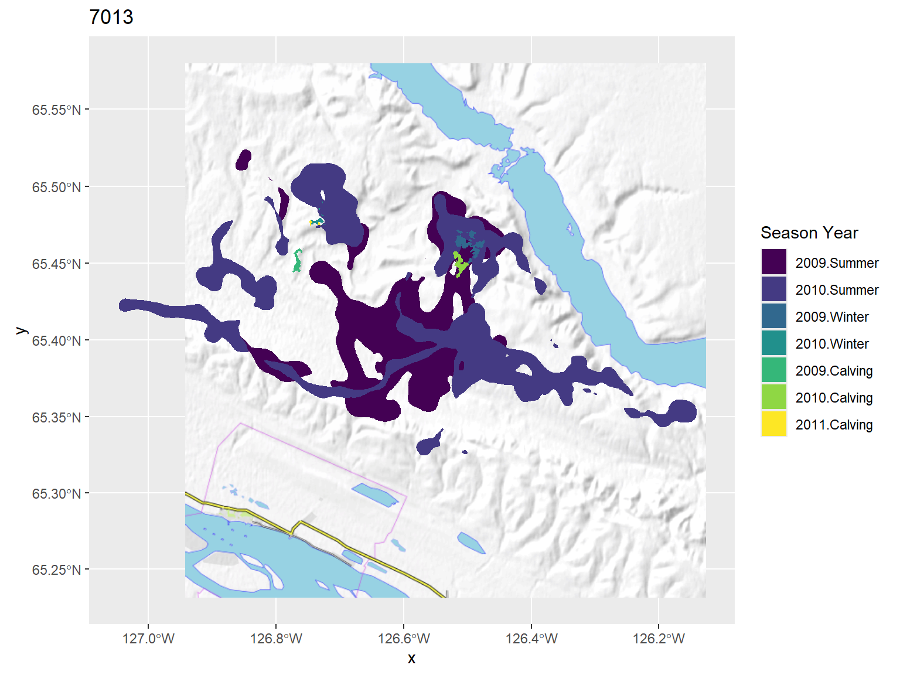
Loading basemap 'topographic' from map service 'osm'...
Using geom_raster() with maxpixels = 550715.
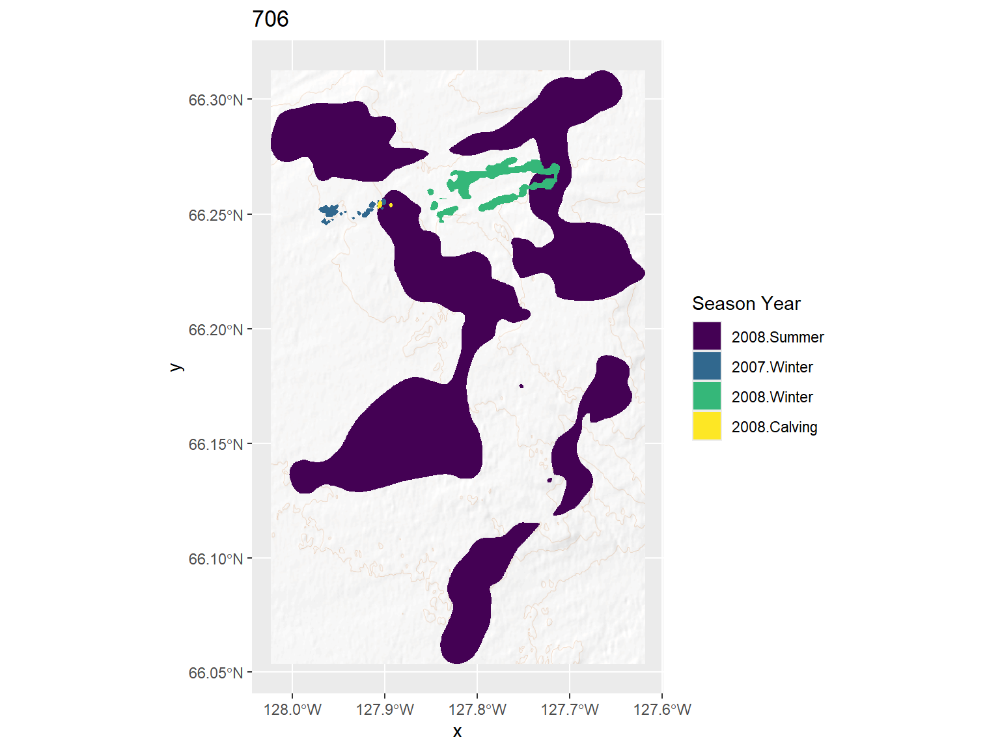
Loading basemap 'topographic' from map service 'osm'...
Using geom_raster() with maxpixels = 747830.
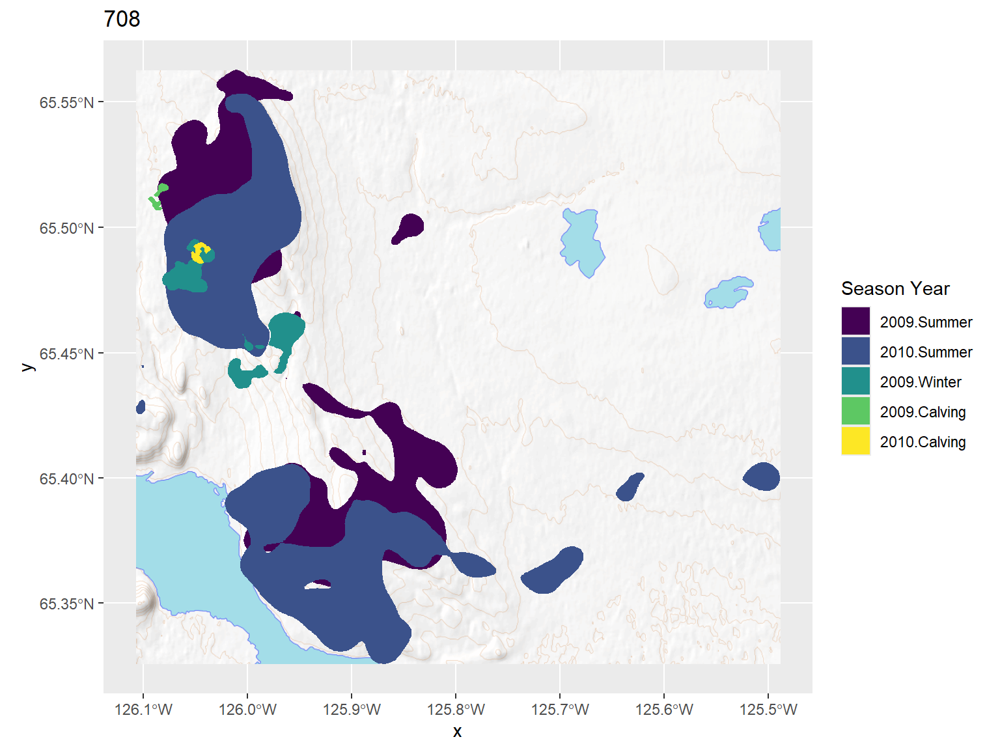
Loading basemap 'topographic' from map service 'osm'...
Using geom_raster() with maxpixels = 523905.
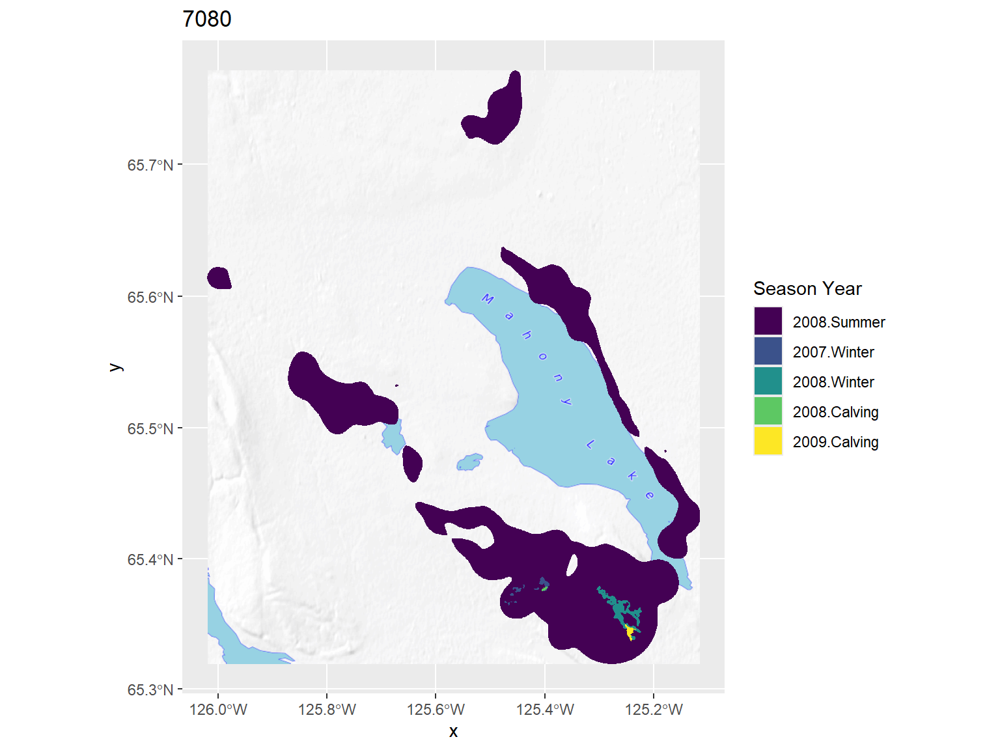
These look reasonable. Let’s also plot the seasonal range sizes to compare between individuals and years:
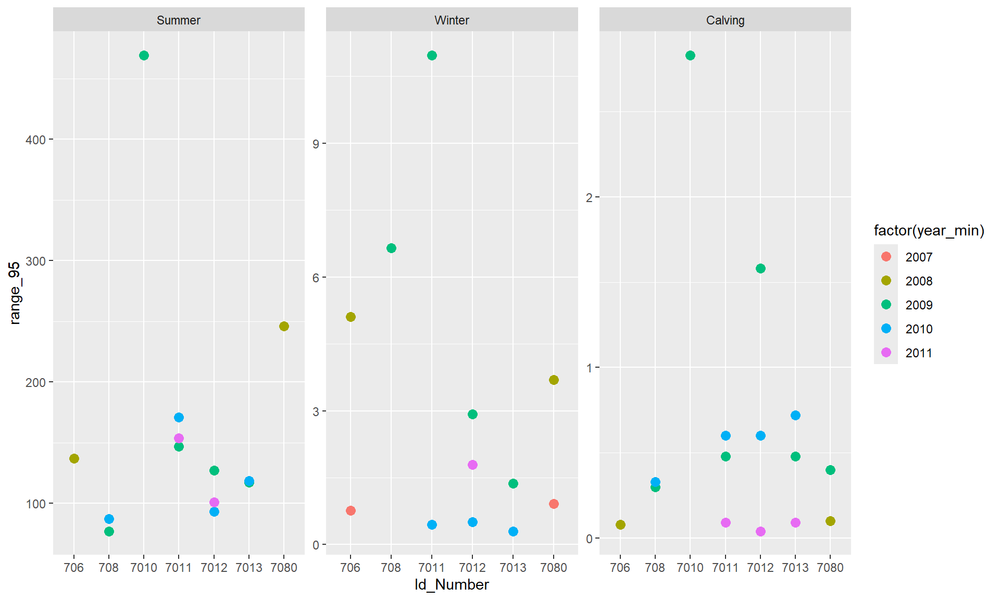
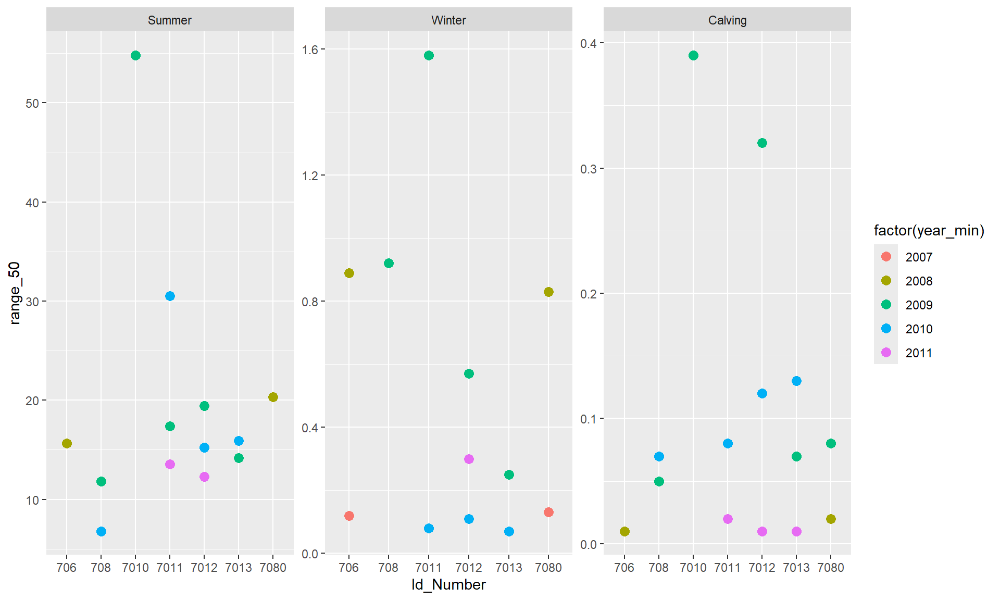
There are some large ranges in 2009, particularly for 7011 (summer and calving), 7010 winter, 7012 calving, and 708 winter.
Interestingly, summer home range sizes are fairly consistent within individuals and between the two individuals (7012 and 7013) that overlap in space use. Perhaps the land cover or topography of the area plays a large role in determining home range size. This is not the case with winter or calving range, which show a lot of variability within individuals, but appear to be similar within years. This suggests a role of weather (e.g. snow depth) in determining winter and calving range size, though differences in topography and land cover could still account for the variation seen in some years (e.g. 2009). Let’s compare these differences using mean absolute percentage differences for range sizes
season
mean_percent_diff_id
mean_percent_diff_year
Summer
0.07
0.38
Winter
0.66
0.32
Calving
0.49
0.50
Range Overlap
We will now use the kerneloverlap function to investigate the degree of overlap between seasonal ranges within the same year and between years. This function implements a number of overlap metrics that are well suited to measuring overlap of utilization distributions. Consequently, we can explore not only overlap between contours of a given size, but also the degree to which high probability regions of ranges overlap. For example the PHR function calculates the probability of an individual from one home range being found in another home range.
Let’s plot the overlap metrics. The first graph shows the percent overlap of an individual’s 95% home range contour from different seasons and years. Home rqanges represented by columns are compared against home ranges represented by rows and separated by different year lags.
The second graph depicts the probability that an individual with a utilization distribution represented by the row is found in the 95% home range contour represented by the column.
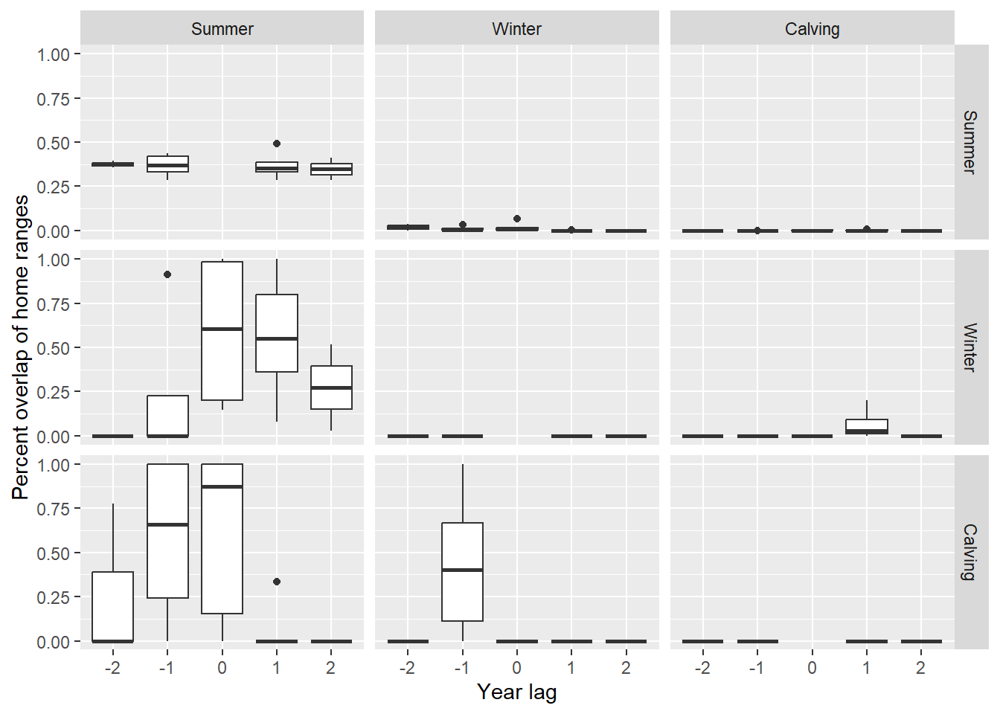
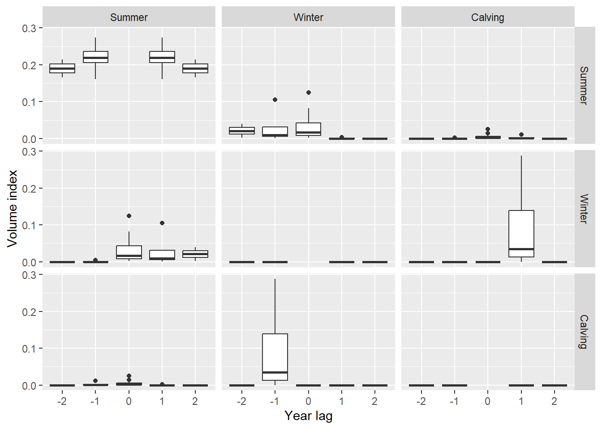
A few patterns are clear from these graphs:
Summer home ranges shared ~40% of their area across years.
Winter and calving home ranges typically shared a high overlap with summer ranges, especially those from the same year. However, there was a lot of variation in this overlap, with some seasons having near 100% overlap and some having very little overlap.
Calving season ranges shared a high overlap with the winter season range immediately preceding it, but there was considerable variation in this overlap.
Winter and calving season ranges showed negligible overlap across years, suggesting low seasonal range fidelity.
Lastly, let’s look at the comparison of seasonal ranges between muskox 7012 and 7013, which were the only muskoxen that overlapped in space and time.
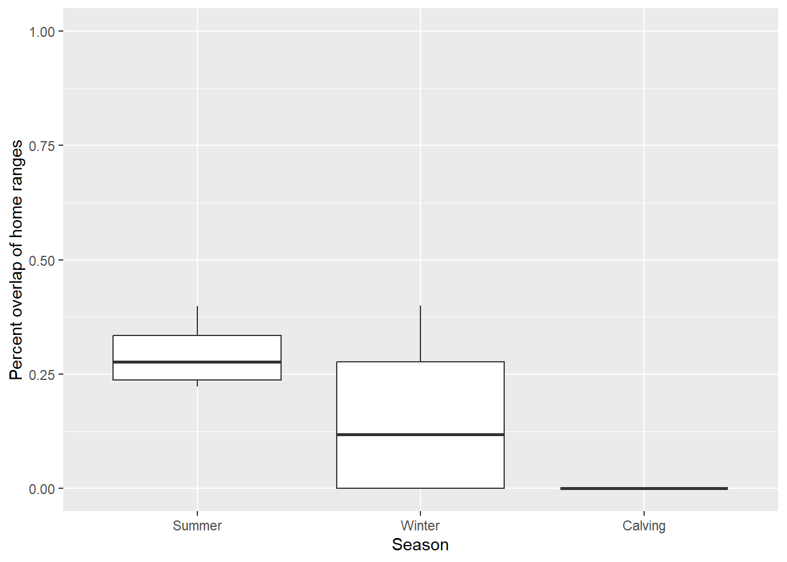
The highest overlap is during the summer. These muskoxen do not appear to share large areas during the winter or calving season and despite being found in the same location occasionally, they appeared to wander on their own for most of the time they were collared.
Check Data Cutoffs
Let’s first check to see if our data cutoffs are appropriate. We’ll subset our datasets for winter to look at the individual-season combinations with relocations covering the full season. We’ll then calculate home ranges for the full dataset and data set with 30,60,90 days removed from the start or end of the time series. We’ll then look at percent overlap between the home ranges. We’ll consider the subset to be a good approximation of the seasonal home range if the percent overlap is >80%.